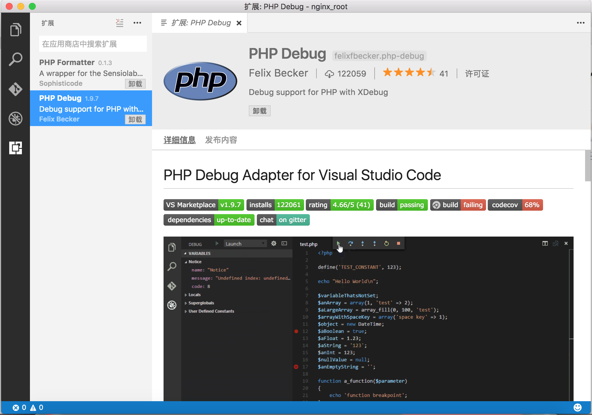

vsCode+PHPDebug插件+XDebug
和vsCode比起来，Eclipse还是显得有些臃肿，所以平时用vsCode的时间比较多。虽然不奢望它的功能和IDE一样强大，但是希望至少要有debug功能才够方便。vsCode中正好有这样的插件，就PHP Debug。在插件中心就可以搜到它了。 但是要注意图中的Adapter这个词。这个插件只是个适配器，光装插件是无法debug的，还需要安装xdebug。如果你是PHP程序员，对它肯定十分熟悉。在Windows下安装它十分简单，到xdebug.org按你PHP的版本下个DLL就可以了。但在OSX上稍微麻烦一点点，我曾经尝试过用homebrew来安装，但是失败了，于是找源码来编译。过程还是比较简单的，在它的github上写了详细的步骤，地址是：https://github.com/xdebug/xdebug。
首先，你需要有phpize，接下来下好源码，cd到源码目录，执行./configure --enable-xdebug和make命令来编译，之后就可以在modules目录下得到xdebug.so文件了，将它拷贝到/usr/lib/php/extensions/no-debug-non-zts-20121212目录下即可。接下来，编辑php.ini文件，在其下加上如下几行：
;xdebug配置
[Xdebug]
;载入Xdebug
zend_extension=xdebug.so
;开启自动跟踪
xdebug.auto_trace = On
;开启异常跟踪
xdebug.show_exception_trace = On
;开启远程调试自动启动
xdebug.remote_autostart = On
;开启远程调试
xdebug.remote_enable = On
;收集变量
xdebug.collect_vars = On
;收集返回值
xdebug.collect_return = On
;收集参数
xdebug.collect_params = On
;端口
xdebug.remote_port = 9001
至此，这个插件就算安好了。可以像在IDE中一样，用vsCode来调试PHP代码了。
(Fin.)